What You Say Is What You Get?
Towards a deliberate use of large language models for custom graphic design tools
Fabian Pitzer
Master of Arts in Design
Visual Communication
Mentor
Urs Hofer
Zurich University of the Arts
June 2026
Abstract
Large language models generate code from natural language. The ability to describe visual processes with specificity becomes essential for creating graphics that are difficult to realize and even conceive within the constraints of conventional tools. At the same time, relying on a technology with uncertain and far-reaching implications calls for critical evaluation of its contribution to design. The thesis examines the role of computation in communicating ideas visually and offers a tool for graphic designers to use language-driven interfaces more deliberately.
Introduction
Research Questions
Primary research question:
How can graphic designers engage with LLM-based tool building deliberately?
Supporting research questions:
What constitutes sustainable use of LLMs in tool building?
What role does language play in building tools with LLMs?
What benefits do custom tools offer to graphic design processes and outcomes?
Methodology
This thesis combines practice-based research with critical analysis. As part of the research process, I built a website connecting curated graphic design work to the technical vocabulary of its underlying systems and wrote a manifesto articulating a position on the deliberate use of large language models. The written argument informed the making of these artifacts and vice versa. I also participated in and observed a workshop on LLM-assisted tool building in a graphic design education context, which provided first-hand empirical data on how designers currently encounter this technology.
I further conducted my own tool building experiments, using custom tools as my primary medium for design throughout the master’s program. These practical experiences are reflected in the analysis alongside a review of relevant literature spanning graphic design, computer science, creative coding, design education, and artificial intelligence. Selected projects are examined as case studies to identify how computational processes can inform and shape design outcomes. This combination of analysis and making allows for an exploration of both the conceptual and practical implications of working with custom tools in graphic design.
Motivation
LLMs have made custom tool building significantly more accessible to graphic designers. At the same time, much of the current output remains driven by novelty, producing work that is visually striking but can lack in conceptual depth and communicative clarity. The value of a custom tool should not lie in its novelty, but in its ability to support meaningful forms of visual communication.
LLMs accelerate the tool building process and can facilitate production over reflection. Prompting without clear intentions tends to produce generic results and may discourage deeper engagement with the underlying process. As these technologies rapidly become integrated into creative workflows, their implications need to be discussed critically.
This thesis is motivated by the belief that custom tool building should become more deliberate. I argue for a more intentional, critical, and conscious use of technology. To use LLMs in this way, designers need to become familiar with the technical language and mode of thinking associated with tool building. This includes being able to describe visuals with precision and understanding of computational processes beyond the conventions of existing design software. A deliberate use further implies an awareness of the environmental and psychological impact of LLMs, along with an understanding of why custom tools should exist and what they communicate.
Acknowledgements
I would like to sincerely thank my mentor, Urs Hofer, for his constructive feedback and for helping me untangle the turmoil around large language models. I also want to thank Zeo Löwenhielm for his suggestions and my mother for raising me with care and love.
The Tool Building Trend
Design critic Alice Twemlow writes in 60 Innovators Shaping Our Creative Future: “At the sharp edge of contemporary graphic design, where tools and approaches are being tested, media absorbed and territory assimilated, a new type of practice is being forged. […] [I]ts progenitors initiate their own projects and often products; they create their own tools.”1 The emergence of new tools has long been a defining factor for the development of arts and design. Graphic design transitioning to digital work environments has made it possible for designers to build and modify their own toolkit, regardless of material constraints, using code.
Making one’s own tools has increasingly become a part of graphic design discourse. This can be seen in projects presented in the Junge Grafik exhibition of the Museum für Gestaltung Zürich2 to big branding agencies like Studio Dumbar and Studio Koto.3 Universities like the HGK or the ZHdK make room in their visual communication curricula for modules in “Generative Tool Making” and “Critical Coding.”4 Graphic design festivals like Weltformat and International Assembly offer Coding Workshops as part of their program.5
Large Language Models as Catalyst
The reason for the increase in popularity of custom-coded tools is most probably linked to the availability and capabilities of large language models. The way they generate code significantly speeds up workflows of people who know programming and similarly lowers the entry barrier for those not familiar. In the design world, code used to have a certain mysticism to it. Few designers dared to venture from the more fuzzy, bendable rules of visual design to programming, which is ruled by cryptic programming languages and strict syntactical notation. While more present interactive media studies, which rely on code to make things interactive, visual communication degrees did not seem to have room to include the complex foundational knowledge required for coding in their curricula.
As such, it is still rare to find people who are deeply proficient in both disciplines. LLMs considerably lower the entry barrier for designers to express their ideas in code. There are still numerous hurdles, such as dealing with coding environments and debugging, but the fact alone that LLMs are able to interpret an instruction like “code a brush that draws with emojis” to get an equivalent of these lines of code is a huge change:
let emojis = ["😂","🔥","🌈","✨","🐸","🎉","💀"];
function draw() {
text(random(emojis), mouseX, mouseY);
}
The natural language prompt could be in any language, phrased in multiple ways, and full of spelling mistakes. Removing almost any character in the code above will break it completely. Aside from its capabilities to get the syntax right, it is interesting to note that the AI seems to have some degree of understanding of the logic needed to structure computer programs. This becomes evident through the generation of much more complex code, where a single larger goal is broken down into individual functions that accomplish it. Moreover, since the model is not only trained on code but large amounts of text related to all sorts of topics, it is able to interpret vague or metaphoric language to some degree.
In her bachelor’s project “TypoMorphosis,”6 Artemisia Astolfi explored experimental typesetting through InDesign scripting, despite having little to no coding experience beforehand. In one of her prompts, she asks for a script that takes a “sculptural approach” to typesetting. In an attempt to replicate her results by giving a similar prompt, ChatGPT replies that this would mean the script has to start treating text as spatial material, breaking it into units and transforming them in space. It proceeds to output a JSX script that loops through every letter and arranges them along a spiral. The script may be interesting for concrete poetry or as a decorative element, but it makes readability difficult. Alongside her metaphorical description, Astolfi specified that the sculptural appearance should be achieved through indentation. The bit of technical design language was crucial to receiving the result she had in mind.
When aiming for a computationally complex design tool, it is important to be familiar with the technical terms in programming as well. I want to demonstrate this by detailing a personal experience of building a tool. I was inspired by an artwork of Dutch artist Harm van den Dorpel. It shows a 14th-century woodcut titled “Dance of Death” disintegrating, pixel by pixel, into what appears like a pile of dust. Van den Dorpel published it as part of a series titled “Pixel Sorters.” Despite this, looking at implementations of pixel sorting algorithms on images shows a visually different result. It is more reminiscent of digital glitches than the natural behavior in van den Dorpel’s piece. I was familiar with the behavior of the pixels from simulation games like Max Bittker’s Sandspiel and was able to find a tutorial by Pierre Vigier that implements a “Falling Sand Cellular Automaton”7 for his indie game.

ChatGPT effortlessly translated the code written in Python to JavaScript. This allowed me to apply the effect to an image and host the simulation on a website. Seeing how it ran rather slowly for large images, I merely tasked it to “improve the performance,” and the AI proceeded to restructure the code to implement a process called bit shifting. This manipulates the pixels in the computer’s storage in a way that is much closer to how the machine operates and thereby significantly faster. Such optimized approaches to programming are typically beyond the reach of intermediate coders. The drastic change in accessibility of programming demonstrated in these two examples will likely cause custom tool building to become a much more common practice in the future of graphic design.
Trends Within the Trend
Within the wave of designs built with custom tools following the emergence of large language models, there are three types of tools that I come across more frequently.
Identity Generators
I label the first category identity generators, referring to mostly web-based tools that generate variations within a design system defined in code. This type of tool was popularized by DIA Studio for an event called Secret 7″ in 2018, which they developed in collaboration with Zach Lieberman.8 The connection between flexible identity systems and code was later taken up by Martin Lorenz and Tim Rodenbröker under the “Coding Systems” moniker in 2024. They outline a process in which studios deliver a tool instead of static files.
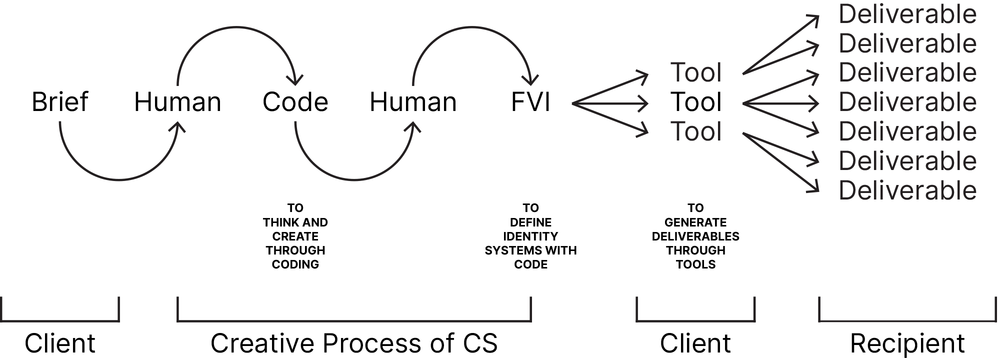
This approach is particularly suited to identity design, where consistent appearance is a main concern. Rather than relying on brand manuals, rules can be embedded directly into the system, limiting how parameters can be adjusted. This allows non-designers to generate content while staying within the intended framework. Delivered as a web-based interface, such tools also remove the need for clients to engage with complex design software. However, many current examples remain limited in how compositions are generated. Effects are often applied uniformly, with sliders used to tweak outcomes, resulting in visually even or repetitive layouts.
Custom Brushes
The next category of tools are custom brushes. I assume them to be popular not only because of how easy it is to make one, but also because they are immediately fun to use. When I gave a workshop on coding brushes, it did not take me to finish my introduction for students to be doodling away on the digital canvas.
One could argue that brush tools benefit from the limitations of their interfaces. Trackpad and mouse are notoriously inconvenient for drawing, which can result in charmingly crude and wonky drawings. Drawing tools can bring a human touch to the otherwise cold, mechanical world of code.
At the same time, a brush tool as simple as the emoji brush mentioned above, highlights the limitations of existing software. In tools like Photoshop, brushes remain constrained to grayscale image-tips.9 Code in comparison allows for multi-colored, animated and reactive brushes.
Image Filters
The third trend I identify is that of image filters. An image is fed into a system and, based on a parameter such as brightness, elements are distributed to rebuild the image. These elements can be much more complex than the colored squares that are pixels. New media artist Golan Levin explored this in his 2000 work “Segmentation and Symptom,” which depicts portraits of refugees through varying densities of a Voronoi diagram. Reflecting on the piece, he describes the image filter as a long-standing fixation in computational art. He goes on to question the often arbitrary relationship between filter and subject and ultimately considers the work a “dead end,”10 as it does not resolve this tension in a satisfactory manner.
Despite this critique, such filters remain widely popular, especially on platforms like Instagram, where they produce visually striking results that stand out in the competition for attention. They are typically applied to simple, recognizable subjects such as faces or single letters, while the question of how form and content relate is often left unaddressed. Similar to branding generators, these filters tend to be applied uniformly across the image, resulting in compositions that feel even or wallpaper-like. This also reflects the structure of code-based tools, where global transformations are easier to implement than intentional spatial arrangements.
A New Tool Building Resource
Creative coding bibles like “Generative Design” by Bohnacker, Gross and Laub are well known in design education. Released in 2009 and updated in 2018 to accommodate rapid developments in the field, it provides an introduction to coding “focused on the designer’s point of view.”11 It served as an entry point for many designers and deserves praise for its contribution to the development of this emerging niche. Despite its value as an educational tool, it can fall short in terms of sparking excitement in graphic designers. Showing how code has the potential to result in high quality graphic design is essential to keeping students interested. As programming educator and designer Møller Hansen puts it: “Students respond poorly to a lack of aesthetic quality in the output produced by their code. [It needs to be] useful and sellable at a professional level.”12
Many of the coded examples provided in the book resemble glitch art or early computer art of the 60s. Excessive use of randomness in color and composition create patterns that communicate the voice of the machine. This makes sense because for one, the resource showcases tools not applications of tools. Where a designer might define a parameter to contribute to the communication of a message, it can be filled with a random, machine-decided one when the goal of communication is absent.
Further, their aim is to make designers learn how to write code. For this, they need to actually understand, modify, and replicate the code. The programs have to be simple and use basic functions like drawing geometric primitives, like lines and circles. Additionally, the aim is to demonstrate what computers can do particularly well. Randomness is one such capability, though its desirability in design outputs remains questionable. Maurer, Paulus, Puckey, and Wouters perpetuate in their Conditional Design Manifesto: “Avoid arbitrary randomness. Difference should have a reason.”13
As part of this thesis, I have built a website to explore tool building in an age of large language models. It connects curated graphic design work to the technical language associated with its systems. Unlike a flat list of references, the tree structure shows how fields relate to each other and demonstrates the breadth of directions designers can investigate. Randomness is only a small part of the resulting diagram, next to other fields like simulation, computer vision, or recursion. The overview should help designers structure and expand their understanding of computational processes, allowing them to venture beyond beaten paths and create more unconventional work.
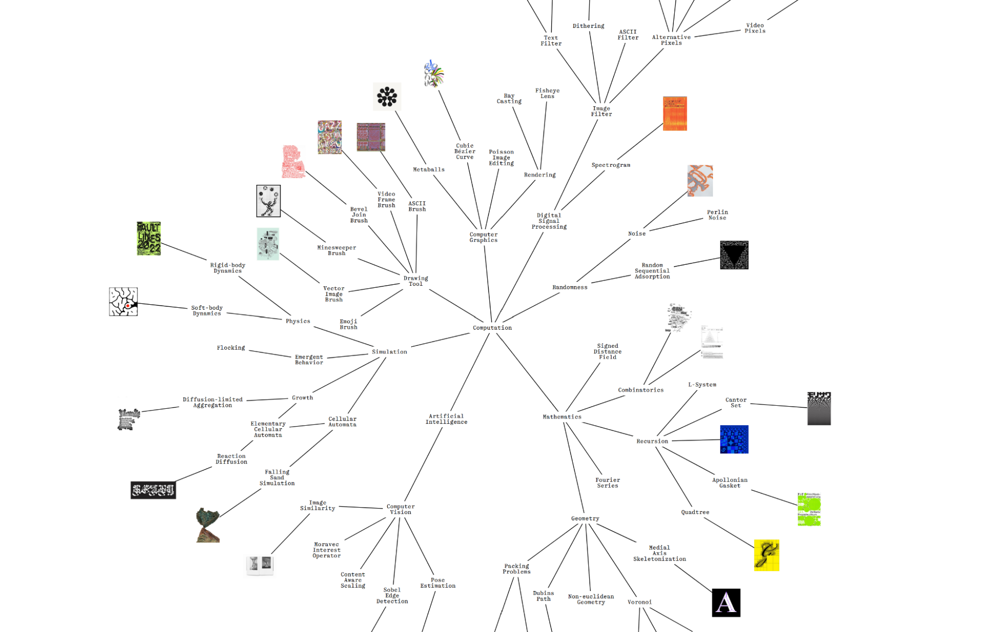
The code required for many of these algorithms is much more complex than that of the “Generative Design” examples, but this matters less if LLMs take over the implementation. This is not to say that everything should be prompted from scratch. I encourage looking for existing solutions and being mindful of the environment as well as one’s own learning. I therefore extend the collection of terms with my own code examples that allow for quick, resource-saving experimentation. A live code editor exposes key variables and enables users to play with the parameters of the system without additional prompting. Making the code visible also gives a peek into how these tools actually work, contributing to tech literacy amongst designers.
The algorithms are applied to the same bit typeset text to allow for better comparison. This enables the evaluation of algorithms from a visual literacy perspective. I choose typography as the basis because the written word is one of the most powerful tools for visual communication and letterforms remain legible even when distorted.
The selected works and the way they are connected, should also encourage thinking about how to deconstruct the patterns underlying designs. This is a crucial skill to develop alongside acquiring technical vocabulary. To build meaningful custom tools, designers need to understand what is possible, what is desirable, and how to achieve it. The website offers a starting point for developing this understanding, but should not be misunderstood as a shortcut. It can also serve as a tool for research and communication between collaborators. In this sense, the graph can be read as a sort of color fan for computation, allowing the labelling, comparing and communicating of algorithms.
It should also not be interpreted as a demonstration of the superiority of custom tools, but act as a basis for discussion about the communicative potential of programming. Ideally, it will help bring the disciplines closer together and enable designers to shape current and future tools in ways that benefit the discipline.
A Brief History of Coded Graphics
To give an impression of why it was historically difficult for designers to enter the world of computer science and get involved with building their own tools, I will briefly outline the history using code to create art and design. Over decades computers have become more powerful while shrinking in size. The accessibility of coding, that is instructing the computer on what to do, has grown consistently. Early programmers had to carefully write out their programs on paper, then create cards with punched holes for each line, only to feed the whole deck into a massive machine. This machine could then read the holes as electrical signals and print out the result. Now, people can just dictate roughly what they want a program to do into their phones and have an AI interpret the instructions, execute code, and spit out an answer.
Clive Thompson outlines in his article on “Coding after Coders,”14 how the actual inner workings of the machine, which still rely on binary electrical signals, have become more and more abstracted over the decades. Low-level languages like Assembly paved the way for high-level ones like Python that automate the tedious task of handling the computer’s memory and replace cryptic abbreviations with commands that almost read like English. Programming today relies heavily on libraries and frameworks that other people have written. Using a library can give access to functionality of thousands of lines of code while adding only one to a program. With large language models, abstraction has reached the point where even barely technical natural language instructions are sufficient to enter the world of computation.
Humble Beginnings
1960s: Early Computer Art
Pioneers like Georg Nees, Charles Csuri or Vera Molnár discovered the computer as a medium for artistic expression. Their works are the result of an incredible technical effort and were often created using the massive mainframe computers of universities. The graphical output was generated through plotting machines, as computers back then usually did not have screens. Due to the simplicity imposed by the technical limitations of the time, artists had to carefully plan their artworks, taking into consideration the possibilities the hardware enables and the resources that need to be invested in an experiment.
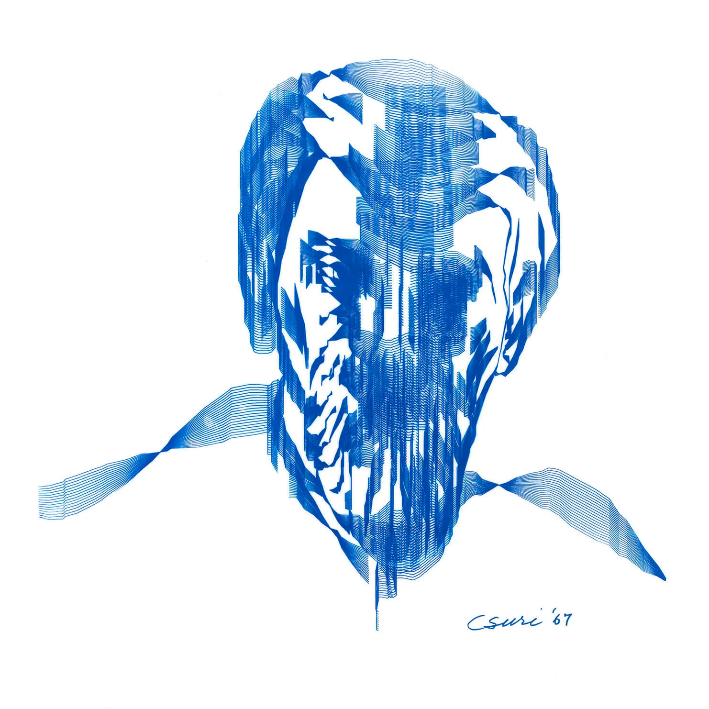
1970s: What You See Is What You Get
While the origin of the phrase in relation to computing is disputed, Merriam Webster now defines the acronym WYSIWYG as “a display generated by word-processing or desktop-publishing software that exactly reflects the document as it would appear in its finished state.”15 This relates to a time where computer screens started to become more common, but their content was text rather than image-based. Before the appearance of WYSIWYG-editors, one could define a typeface to be used for the text, but had no option of previewing the final document other than actually printing it.
In an essay, design critic Michael Rock reminisces about his studies in the “pre-Macintosh era”: “I would type characters on a luminous green monitor, using an entirely abstract string of coordinates similar to HTML markup, and a cup-of-coffee later the beige box would spit out a roll of paper that may, or may not, resemble the design I had envisioned. Once again the technology distanced the creative process, made it architectural. But at the time we saw this as a vast improvement over the system wherein we would literally mark-up manuscript, coding sentences and paragraphs with red pencil notations, and send them off to a professional typesetter charged with rendering our ideas in type. We were re-claiming the means of production.”16 With WYSIWYG, technology distanced the design process from its hands-on origins, but it also brought autonomy to designers. I speculate a similar revolution might happen through designers being able to build their own tools using large language models.
Creative Coding Cambrian Explosion
Creative Coding
Creative coding as a discipline is only loosely defined. Wikipedia contributors have put it as “a type of computer programming in which the goal is to create something expressive instead of something functional,”17 followed by a long list of disciplines and technologies it can be applied to, including design. I would argue that graphic design is functional, with the goal of communication. Another definition is to be found on the website of creative coding educator Tim Rodenbröker: “(Creative Coding) is a process, based on exploration, iteration, reflection and discovery, where code is used as the primary medium to create a wide range of media artifacts.”18 His definition was borrowed from the dissertation of creative coder Stig Møller Hansen, who in turn took it from a paper on the Processing coding tool published in 2013. The original definition by C. Mitchell and Brown goes as follows: “[Creative coding is] a discovery-based process consisting of exploration, iteration, and reflection, using code as a primary medium, towards a media artefact designed for an artistic context.”19 The later omitted focus on the artistic context is an important distinction, which alludes to the experimental rather than functional nature of the discipline.
1996: Flash
Adobe Flash, originally released as Macromedia Flash, democratized sharing interactive creative experiments on the internet. It combined a drawing, animation and scripting interface. This enables artists to experiment with code while getting real time visual feedback. Unifying artistic and technical needs with easy to share outcomes allowed for a rapid expansion of playful creative content on the web.
2001: Processing
During their time at the MIT Media Lab, Ben Fry and Casey Reas developed Processing, a framework for coding aimed specifically at designers. Processing focuses on creating visuals directly through code by supplying users with simple functions like stroke() and circle(). Labelling the development environment a sketchbook, they intentionally reference the iterative and experimental approach of traditional design. An open-source project with emphasis on sharing and learning, it quickly became foundational to creative coding. The framework was later adapted to JavaScript, the programming language that now powers most websites, as P5.js. This made sharing code experiments easier and was rapidly adopted in education and online communities.
2001: Scriptographer
Scriptographer was developed by Jürg Lehni as an open-source plugin for Adobe Illustrator. In an essay on teaching designers at ECAL together with Jonathan Puckey he notes: “Until recently, the software available to designers was rather static in nature. Driven by the promise of What You See Is What You Get (WYSIWYG) and inspired by ways of working that predate the computer[.] […] This suggests a need to explore the potential of the computer beyond its role as a ‘simulation machine’ for pre-digital processes such as print, or photography with film.”20 It was essential to their way of thinking that their tools were not to be seen as “pure programming environments” but rather evolving extensions that integrate into design workflows. Frustrated with the “closed and expensive confines” of Adobe software, they later went on to create Paper.js, which like P5.js, runs in the browser on an HTML canvas.
When the Novelty Wears Off
Custom Tools
The notion of “custom tools” in graphic design is an ambiguous term, even though it is used frequently when talking about code in this context.21 Merriam-Webster gives multiple definitions of the word tool that paint an image of why. According to them, a tool is “necessary in the practice of a vocation or profession,” can be “an element of a computer program (such as a graphics application) that activates and controls a particular function” and finally, is “a means to an end,”22 where the “end” could be the goal of communicating visually. It is therefore a term that implies a more directed, intentional use as compared to other buzzwords surrounding the emerging practice.
The specification of “custom” discerns tools created or modified by designers from the tools that are standard in the industry and supplied by big tech corporations. For the purpose of this thesis I will not exclude modifications to existing software, as through custom scripts or plugins. Custom tools include any tool that deviates from the “default” experience one is subject to without the ability to build and modify tools by writing code. “Custom” also emphasizes that a tool is specifically tailored to an idea. Custom tools let the tool be shaped by the idea, rather than the idea being limited by familiar tools. This type of design is becoming much easier to produce, and in the future designers might treat computer-generated form and motion as variables alongside typefaces, colours, and images.
Graphic design is a practice revolutionized through technologies like movable type and desktop publishing. Perhaps a next revolution is inbound, with coding becoming accessible to the mainstream. In an Eye on Design article on “How Computer Code Became a Modern Design Medium—an Oral History” from 2019 Zach Lieberman concludes: “At one point this stuff was new. It’s not new anymore. And I think that’s also really exciting. When the technology is new, a lot of what you’re doing is very formal; it’s about figuring it out. But as the medium establishes itself, then it’s really more like artistic expression—What does code mean and how can we use it to tell really meaningful stories?”23
Already in 1989, Muriel Cooper discusses the larger implications of designers engaging with computation and specifically predicts assistants that “learn and think” as a major challenge to our society. She concludes by cautioning that computers will change every aspect of our lives and insists it is “imperative that we all spend less time ignoring or challenging the threat of computers, and educate ourselves and participate in the direction of this polymorphous medium.”24
LLMs for Custom Tools in Graphic Design
A Controversial Technology
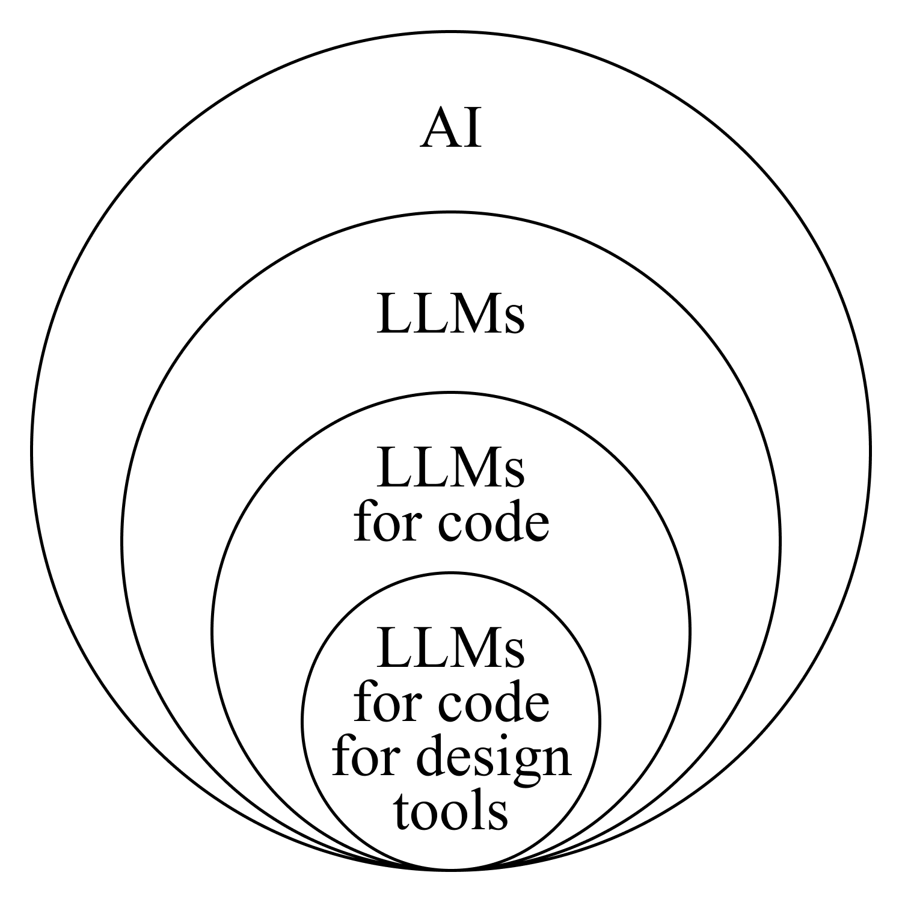
The developments surrounding artificial intelligence are subject to great debate, especially within creative disciplines. Generative models can replicate styles of living artists and have inherent issues with bias around race and gender. They generate images and videos that have a low-effort, “slop” aesthetic, which are being used to spread fake news and propaganda. The list goes on.
While these concerns are legitimate, it is important to separate the issues around artificial intelligence in general from the ones that are specific to LLMs and, even more precisely, the use of LLMs to generate code for graphic design tools. This will allow for a more focused discussion. I begin with my observation of concerns in a tool building workshop and continue by covering the most far-reaching implications around LLM-fuelled code generation. Beyond that, I will give my explanation for why I find the use of AI to build custom design tools a bright spot in the otherwise highly debated application of AI in art and design.
Concerns of Students
As part of my research, I participated in a workshop that introduced graphic design students to tool building with LLMs. I approached the week-long module as an ethnographic study, observing reactions and taking note of the struggles that students faced.
There appeared to be a general sense of being overwhelmed. This is only natural, since before LLMs, people spent years getting acquainted with the world of programming. Frustrations ensued when the fixing of problems through prompting seemed to rely on luck of the draw. Besides that, not having the benefits of custom tools clearly presented to them caused a lack of motivation. The live demonstrations of the host could have just as well and possibly more quickly been made in traditional software. I also noticed a dissatisfaction with the arbitrariness of how to further develop tools. Since there was no clear goal communicated, students lacked criteria to judge their outcomes on. Tool building stayed an experiment for experimentations’ sake.
Aside from the pedagogical framing, students grappled with broader concerns about artificial intelligence. A general AI-critical sentiment was to be felt and some specific issues with LLMs were mentioned: Students were uncomfortable with the ambiguity of the ecological impact and they expressed a preference for learning coding rather than just producing something. Finally, they were fatigued by the often mindless and asocial process of prompting.
This experience inspired me to write the Killing the Vibe manifesto, refining my stance and concisely addressing the students' worries. A more thorough discussion follows in the coming chapters.
Addressing Concerns
Large language models and the way they are currently being pushed onto society have implications on a broad range of matters. The issues arise mostly around sustainability. Sustainability in this sense is not limited to ecological impact, but also includes other societal factors, such as hindering cognitive development, pushing workers to produce faster, and threatening a homogenization of graphic design culture.
Outsourcing Thinking
“There are good things about AI. At the moment it’s being used like opium—to alleviate the pain of thinking,”25 warns Oliver Reichenstein, creator of a distraction free writing app. Recent empirical studies support this concern. Shen and Tamkin find that AI assistance can hinder conceptual understanding, debugging ability and the formation of new technical skills when users rely on LLMs too heavily.26 Similarly, Liu et al. show that even brief exposure to AI reduces persistence and worsens performance of subjects at later, unassisted tasks.27 They suggest that rapid access to answers makes users struggle with the sustained cognitive effort required for learning.
Early versions of LLM coding assistants were at most usable as a sophisticated autocomplete. Most of the logic and organization of a program still had to be done by the human developer. Just small parts of the code could be filled in correctly, given a detailed description of its functionality was provided.
In 2026, “agents” have become a popular tool in code generation. “Agentic” coding describes a process where a single prompt spawns an entity that autonomously generates subtasks. From a single, broad instruction like “create a funny brush tool” the agent makes detailed plans for an implementation, “thinking” about what might make a brush funny, outlining what files would be needed and what framework should be used etc. This whole process happens at frantic speed inside a small text box, inviting users to ignore all of it. Agentic coding enables effortless creation of tools that are bloated, already exist or are not really needed at all.
LLMs transform the process of coding, which was previously a slow, intentional and carefully planned endeavour, into a sort of addictive slot machine. Reichenstein puts it clearly: “AI enables action without thinking.”28 In their current state, the answers of chatbots are immediate and mostly affirmative, that is unless they conflict with safety guidelines. They do not refuse tasks. Where a human programmer might have avoided overengineering, the AI obeys. A person would also ask follow up questions about important details, the AI goes right to work. In many cases, letting an agent build a tool is like taking a sledgehammer to crack a nut.
The epitome of wasteful LLM use is what some call “vibe coding.”29 The term was coined in a tweet by AI researcher Andrej Karpathy. He describes a new way of coding by casually dictating instructions to an LLM to create “throwaway weekend projects.” In this process he forgets the code even exists. Karpathy shows no concern about the environmental impacts of the technology, which further becomes evident in earlier tweets of his announcing that the “[p]lan is to throw a party in the Andromeda galaxy 1B years from now. Everyone welcome, except for those who litter[.]”30 The naive eco-conscious addition about littering makes evident his ignorance of the digital litter that is a vibe coded throwaway weekend project.
Such an uncritical embrace of LLMs for generating content simply because it is possible represents a form of tech-optimism that I consider careless and dangerous. It is symbolic of a mentality where innovation is pursued at all costs and production speed should accelerate continuously. To formulate a clear stance on this and encourage critical evaluation, I have written a manifesto titled Killing the Vibe. It denounces the laissez-faire activity of vibe coding and calls for a more sustainable and considered use of the technology. Simultaneously, it offers insight into what designers need to know in order to use LLMs deliberately, both from a tech and a design perspective.
One way of responding to the tendency to let machines accelerate our lives, is to slow down intentionally. That creates time to plan, research, and actually learn something by reading the model’s responses. One can also include instructions asking to be critical or to let the AI ask questions, which force the user to think more, rather than less.31 These questions can help clarify intentions and identify what is actually needed. In many cases, it might be better to consult a human, as they are not instructed to comply and their emotional intelligence will allow them to decide whether to offer encouragement or thought-provoking critique.
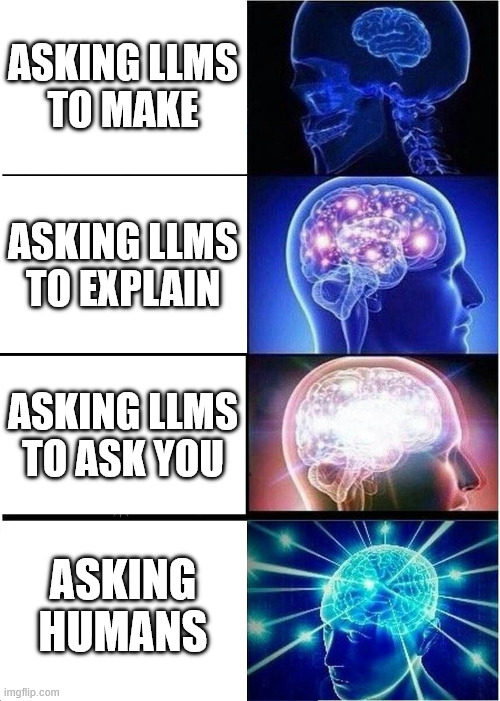
Environmental Impact
As of April 2026, the environmental impact of LLM code generation is hard to assess with precision. The AI companies behind popular coding models have only recently started releasing figures on the environmental impact of their technology. The emerging technology and the infrastructure around it are changing rapidly, with a trend of massive expansion. It expands not only in terms of building more datacenters, but also of adoption in the industry and the amount of compute spent per prompt.
Other than previously assumed, most of the energy spent in the lifecycle of an AI model is not in training, but in inference, that is querying the model to generate an output. Conducting interviews with experts, James O’Donnell and Casey Crownhart determined that an estimated 80 to 90 percent of the energy use comes from this process.32
Looking at energy use of prompting, one point of data comes from OpenAI CEO Sam Altman. In his June 2025 blog post “The Gentle Singularity,” he claims “the average query” to ChatGPT to use “about 0.34 watt-hours” of energy.33 He provides no source to this claim. Similar figures were backed up by a study conducted by Google on their Gemini AI. In August 2025 they made the claim that the “median Gemini Apps text prompt uses less energy than watching nine seconds of television,” citing a number of 0.24 watt-hours.34
It is fair to be sceptical of these numbers, as they were published by those who are heavily invested in the development of AI. O’Donnell and Crownhart investigated the energy use of open source model Llama 3.1 405B and found their average prompt to use 6,706 joules, which is almost eight times higher than the median published by Google.35 This amount of energy is comparable to running a microwave for eight seconds. Elsworth et al. of Google acknowledge in their paper that the median obscures extreme values. They disclose no details about the median prompt’s length or complexity. This makes it difficult to relate their findings to LLM-assisted coding, where prompts are more complex than a simple question-answer interaction.
It is important to note that in programming, LLMs need awareness of existing code in order to produce correct outputs. This related data is called the context of a query and is processed in tokens, i.e. short fragments of text. The more tokens a model processes, the more energy a prompt requires. As a result, even simple questions can involve inspecting large parts of a code base, substantially increasing energy consumption.
Further, since the publication of the figures above, coding with large language models has changed significantly. Coding agents autonomously generate a breakdown of the larger goal they are given in a prompt. They pursue the individual steps, sometimes with access to the developer’s accounts and hard drive. Robbes et al. show that this practice has seen rapid adoption amongst coders.36 This suggests a significantly higher watt-hour average for coding prompts in 2026.
Silicon Valley seems to have turned the excessive use of LLM agents into a sport called “tokenmaxxing.” Under the pretext of productivity, an “engineer at OpenAI processed 210 billion “tokens” — enough text to fill Wikipedia 33 times,” writes Kevin Roose for the New York Times.37 While not as drastic, Simon P. Couch also describes himself as an “extreme power user” in a blog post. He explains using agentic coding for his job in software. Estimating a total of 15 million tokens spent in roughly 30 sessions a day with multiple agents running at once, his “napkin math” brings him to a daily energy consumption comparable to running a dishwasher.38 He does not consider the consumption of water in his calculations, which is also an important concern.
The consumption of water in AI primarily stems from the cooling of datacenters. According to the Google Gemini paper, the median prompt consumes a negligible amount of water, equivalent to approximately five drops.39 Nevertheless, these estimates should be reassessed in light of the industry’s rapid scaling. The planned construction of data centers to power AI will require vast amounts of energy, which has companies like Meta, Amazon and Google seeking to invest in nuclear power.40 Beyond operational costs, one must also consider the extraction of metals and minerals necessary for data center construction. Designer Jacob Lindgren criticizes: “The holes in the Earth’s surface dug to extract the resources needed for phones—in competition with the holes in the atmosphere as perhaps the biggest collectively designed object in the last 100 years—must be considered as a facet of the design processes which call into existence the designed object itself.”41
To conclude, it remains difficult to draw a decisive verdict on the environmental impact of using large language models to generate code. Future research requires artificial intelligence companies to disclose data through transparent and standardized methods that consider the entire lifecycle of their systems. Stefan Grösser, professor at the BFH in Bern, warns of “greenwashing” in the sector, where companies may emphasize low operational emissions while neglecting broader lifecycle impacts.42 What becomes clear is that the environmental impact of LLMs lies less in isolated prompts than in the scale at which these systems are deployed.
Homogenization of Graphic Design
As an introduction to the book CodeCrafted, generative designer Patrik Hübner writes that in a culture of remixes and mashups, wherein AI is the ultimate pattern recognition machine, one runs the risk of “turning design into an exercise of polished predictability.”43 Neural Networks, the technology powering recent advances in Artificial Intelligence, are trained to reproduce patterns from the large dataset it has been fed. As such they are inherently prone to producing familiar outputs. It is therefore important to choose wisely where and in which part of the design process to use AI. Using it to steer the creative parts of a project, will quickly veer it into a direction that makes it replaceable.
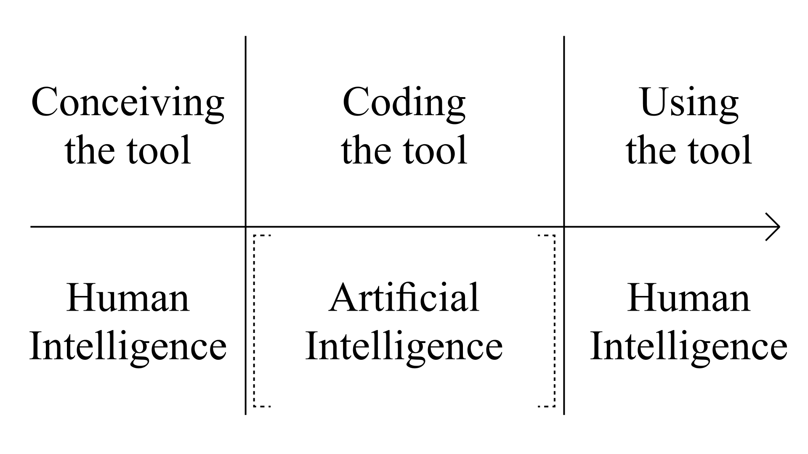
Large language models assign probabilities to text character sequences and tend to generate those with higher likelihood. While there are parameters like “temperature” that can be adjusted to generate outputs that stray further from the mean, these dials are usually abstracted away in user interfaces like ChatGPT. This means that, without giving specific instructions on what the code should do, it is likely that the output will be generic.
When tasked to “create an out of the ordinary brush tool” ChatGPT spits out a bit of code with many of the hallmarks of a beginner creative coding exercise. A black canvas is sprinkled with straight lines in random positions with randomized colors around the position of the cursor. To avoid generic outcomes, designers need to be familiar with precise terminology around design and computation. As an example, one could ask for a brush and specify a bevel join between strokes in front of a gradient based on Floyd-Steinberg dithering. Since the text-based model cannot see images the way humans do, these precise visual descriptions are essential.
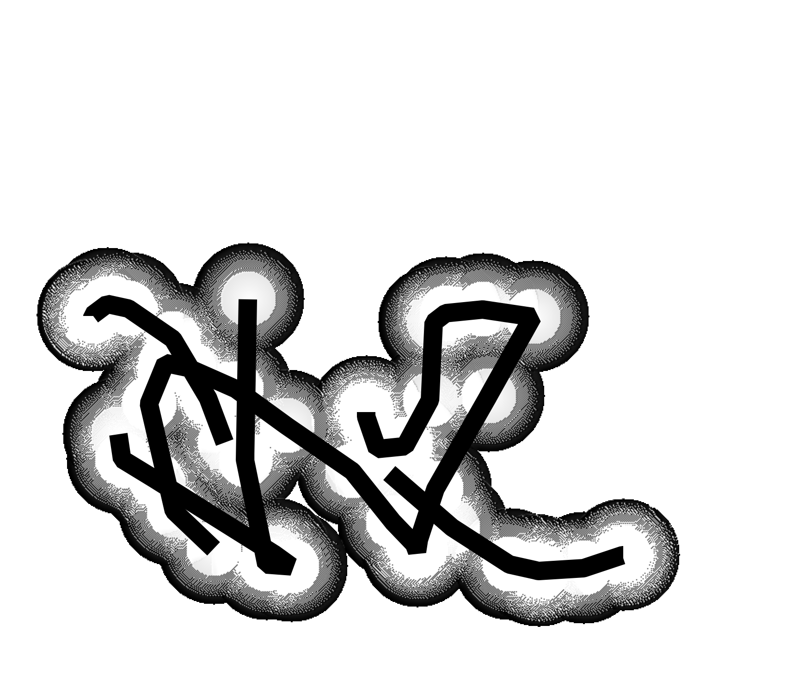
The chatbots will keep trying to involve themselves in the design process, choosing colors and line weights, rounding corners and picking easing functions. This only happens if those variables are not explicitly specified in prompting. They will also make suggestions for how to develop the tool further, suggesting additional features. It is in the designer’s hands to decline and consider every part of the design themselves. If a tool is built with intention, designers can easily avoid the pitfall of generated sameness.
Why This Use of AI Is Different
LLMs Are Great at Generating Code
Having discussed some of the serious concerns that arise from the use of LLMs, I want to explain why they are a great fit for the specific use case of building custom graphic design tools. A substantial reason for why LLMs work well for tool building is specifically because their output is generic. In contrast to AI generated poems that can have a dry, forced feel, or AI generated imagery that is described as having an airbrushed, stock image look, generic code is actually desirable. If code output is generic, it is easier to read than unconventionally written code and it usually solves the problem at hand, because it has been solved in the same way before.
Despite the fact that coding can also be creative in the sense that multiple approaches can be taken and architectures can be more or less elegant, the solution space of a coding problem is often smaller than that of a design problem. Judging a design is a complex task and in many regards also subjective. One can more objectively evaluate whether a coded solution fulfills its intended function, using measurable criteria such as execution time, correctness or maintainability.
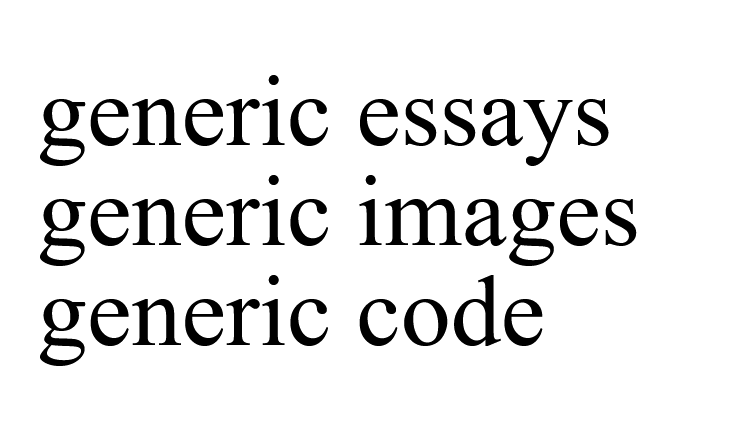
Further, code for graphic design tools has entirely different requirements to that for enterprise software. The scale is smaller and the consequences lighter. While a mistake in a Processing sketch might result in a happy little accident, a flaw in the logic of a traffic light will not. Additionally, Clive Thompson notes that LLMs are particularly good in the area of “greenfield” coding.44 In contrast to the “brownfield,” of large tech corporations, where one works on a huge codebase with complex interdependencies and millions of lines of code, greenfield coding describes a fresh start, where the model merely has to oversee its own output.
In researching AI assisted coding, Thompson interviewed over 70 programmers from various companies. While those working in small startups compared their experience to having superpowers with a “10 to 20 — to even 100” times boost in productivity, software giants like Google measure a bump of a mere 10 percent, according to their chief executive.45 Even among the big AI companies, there are some that fully embrace letting their models handle the software engineering. In 2025, Boris Cherny announced in a tweet that “100% of my contributions to Claude Code were written by Claude Code.”46 When the uroboric code leaked to the public, people discovered the product was full of sloppy practices and crude shortcuts. It contained a bug that wasted 250,000 API calls every day, for the sake of shipping faster.47 Enterprise scale code needs to be reviewed, robust, scalable, and secure. Code generated for internal use as a creative tool on the other hand, has to be none of that. It can be completely bodged together.
An interviewee of Thompson, Anil Dash, argues that the “reason that tech generally — and coders in particular — see L.L.M.s differently than everyone else is that in the creative disciplines, L.L.M.s take away the most soulful human parts of the work and leave the drudgery to you, and in coding, L.L.M.s take away the drudgery and leave the human, soulful parts to you.”48 In graphic design, building custom tools presents an opportunity to use AI while keeping the soulful parts with the human.
Generating Code for Graphic Design
Through the sheer speed in which LLMs can produce code, they make coded tools feasible for designers. Sketching out ideas, trying out directions, all that becomes realistic in the often tightly measured time spans of production in the industry. Before, creating a working prototype of a tool could take weeks. Features that would be visually compelling or would improve the tool’s usability for quick experimentation often had to be excluded because they were too complex to implement.
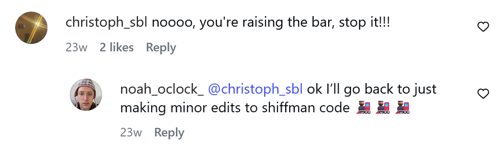
Designers mostly used to rely on tutorials and code snippets shared online as a starting point for their explorations. Variables within a script allow replacing text, changing the colors, or the number of objects drawn. Making major adjustments to the logic of a program or creating one from scratch was often out of reach for designers, depending on technical skills and timeframes. Now, creating more original tools is far easier to achieve. In the words of Thompson: Graphic design and programming, “separated for decades by an ocean of arcane know-how, are drifting closer together.”49
Large language models act as a shortcut from idea to implementation. In many cases, it is enough to know the name of an algorithm to start experimenting with it. In his conversation with Oliver Reichenstein on the topic of “Design as Thought” Orlando Budelacci remarks that at his university, they “have students who are very strong visual thinkers, less so with language.”50 There is great potential in letting graphic designers quickly get back to the familiar terrain of the visual when building tools. Regardless, language remains a necessary intermediate step in tool building with LLMs, even if it is less abstruse in syntax than programming languages.
Language as Design Interface
Written language, especially in the form of computer code, is far removed from the physical world that humanity was occupied with for millions of years. In “Ways of Being” author James Bridle depicts computer languages as the most extreme form of estrangement from the natural world.51 He starts with the very origins of written language, where an ox, depicted as a head with horns, represented “aleph,” which later became the letter A. Similarly, waves on water became the letter M and an icon of an eye became what is now the letter O. This shift from a pictorial to a phonetic language removes the immediate relation to our surroundings from language. It allows us to express abstract concepts. Later, the Latin alphabet became widely used in digital systems through standards such as ASCII, which enabled early text encoding on computers and the internet. Most programming languages also rely on Latin characters, alongside special characters that can make code appear opaque to non-specialists, similar in some respects to scientific notation.
Paradoxically, by adding another layer of abstraction, LLMs bring us one step closer to our origin. Using them, one no longer has to type out every exact command in the programming language, but can just describe the intended functionality in natural language.
Nevertheless, it is still beneficial to be precise in what steps to take. The more detailed, unambiguous and technical the instructions, the closer the result will match the intention. Such instructions will include technical terms for algorithms, as well as a deconstruction of the steps required to arrive at a visual. LLMs struggle to create such detailed breakdowns based on images. Their way of seeing, which relies on an architecture that translates the image into text tokens, seems to be more broadly descriptive than analytical.
Putting Hofmann’s Shapes Into Words
To illustrate the language related skills needed for tool building, I want to walk through a discussion on the Processing forum. A user had asked for help in writing code that replicates the logic behind a set of shapes created by graphic designer and educator Armin Hofmann. The shapes are constructed from a grid of circles that are connected as though a rubber band was laid around them. This system creates an enticing balance of form and counter form and ensures the same graphical language of straight lines and circular curves throughout the variations.
ChatGPT, tasked to describe an image of the shapes with the goal of recreating it, recognizes “irregular blobs with smooth, rounded protrusions, similar to metaballs or soft Voronoi cells.” While an accurate enough analysis for many use cases, the recreation that followed resembled more lumps of dough than the carefully balanced shapes that Hofmann had constructed. Its reconstruction missed the mark, because it failed to recognize the system underlying the shapes. The LLM’s reconstruction placed elements in random positions instead of on a grid. This grid is not clearly indicated in the image: Humans can deduct its existence as the circles are hinted at in both the positive and the negative form of the shape. Analyzing images this way is far from trivial for machines, as it relates to perceptual phenomena like figure-ground and illusory contours.
Even with knowing about this system, its simplicity is deceptive, with multiple users piecing together a solution for generating it in code over years. While it should be rather easy for a designer to draw similar shapes by hand, instructing a machine to draw them requires a detailed breakdown that takes into consideration all the tiny details that, when drawing, are handled by human intuition. To start, selecting a random subset of the circles from the grid is simple. Now, how to describe the exact point of the circle’s circumference to attach the straight part of the outline to? What direction does the outline move around the circle after hitting it? Such cases need to be solved in a way that they are generalized, for every circle in every shape.
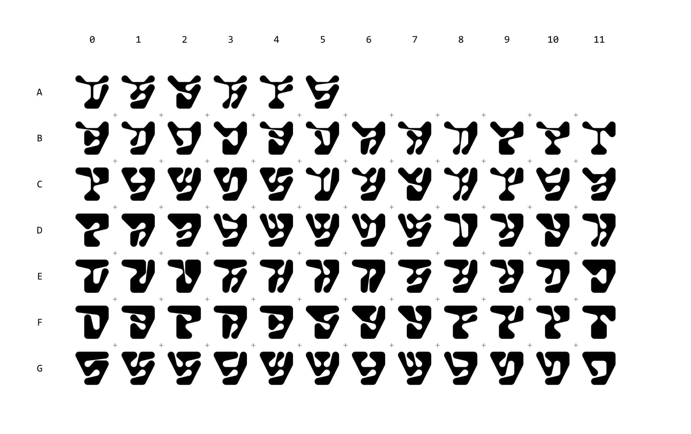
Determining the correct order in which to connect circles, so that the outline does not intersect itself, is not trivial at all. Thankfully, as user “solub” points out, this question can be reduced to a known problem in graph theory: By imagining the circles in the grid as nodes of an interconnected graph, the problem is redefined as finding a path that visits every node exactly once, without causing an intersection. The technical term for describing this problem is finding a non-intersecting Hamiltonian cycle. Solub also gives examples for algorithms that solve this problem, along with a visual explanation of the chosen approach’s implications on the final shape. “Horizontal sorting with 2-opt” creates more of a grass like pattern, “angular sorting” makes them more star-shaped, while a way of attacking the “Traveling Salesman Problem” is solub’s preferred solution, “likely aligning with Armin Hofmann’s intentions.”52
I hope this brief excursion makes it clear why Clive Thompson tempers claims about everyone being able to code now: “If describing and talking are now much of the work of a software developer, the talk nonetheless remains pretty complexand highly technical. An amateur can’t do it.”53 It is therefore important for designers to become familiar with this technical language, less so with previously essential details like the syntax of programming languages.
Learning to Think in Computation
The Hofmann example demonstrates some of the skills designers need to acquire to get into building their own tools. First, they need to recognize systems visually. Second, they need to break the visual system down into individual steps. Third, they need to translate each step into an implementable form, ideally using appropriate technical terminology. Choosing known algorithms not only provides efficient and reusable solutions but also affects the visual outcome. Finally, since not everything will work on the first try, designers need to become skilled at visual debugging by identifying how the result differs from the intended outcome.
In summary, beyond technical language, what designers need to develop is a form of computational thinking. According to Alfred V. Aho, computational thinking involves “formulating problems so their solutions can be represented as computational steps and algorithms.”54 Among the skills the British Computer Society associates with this form of thinking are logical reasoning, decomposition, generalization, evaluation, and thinking in algorithms.55
Peter J. Denning differentiates two versions of these “habits of mind.”56 The first is traditional computational thinking, which is developed by programming itself. The second kind, which Denning calls new computational thinking, is where learning concepts enables programming. This form may be especially useful for programming with LLMs. Natural language acts as a bridge that allows designers to engage computational systems without requiring complete mastery of syntax and language specific functions.
Faramarz Amiri compares designers to tourists rather than linguists in regards to language around programming. He explains that while the “tourist needs the language to be able to communicate with people and explore the new environment and to get by. The linguist needs to understand the syntax, semantics and pragmatics of the language.”57 Essentially, computation can just be a means to empower graphic design, without being concerned with what algorithms imply for computer science.
Educator Stig Møller Hansen developed the “Deconstruction/Reconstruction”58 method to train graphic designers in this mode of thinking. The method consists of two phases in which designers select a graphic design work, dissect its structure and translate the identified steps into a procedural tool that can be adapted and extended. In this way, skills from graphic design, such as precise visual analysis, are connected with computational approaches like procedural thinking and tool building.
While the reconstruction phase is valuable as a learning exercise, its purpose should not necessarily be the reproduction of existing work. Within graphic design, direct imitation can conflict with expectations of originality and authorship. More productive may be the transfer of underlying principles and systems into new contexts and ideas. In this sense, the method becomes a way of training designers to recognize visual systems, translate them into procedural logic and apply these insights to their own tools and design processes.
Automating Systems
Many of the challenges of building the Hofmann-generator stem from trying to automate the entire process of drawing the shapes. It is easier to build a tool that makes it easy to draw lines on a grid of circles, semi-automating the shape construction. This raises the question of what is gained through full automation, particularly when many randomly generated shapes appear less interesting than a few deliberately drawn ones.
Automating the process of drawing these shapes offers the potential of further computational use. If no step has to be done by hand anymore, the tool can be extended in a number of ways: it can become a brush that draws patterns around typographic layouts, generate animations in which a different shape is drawn in every frame, or transform input images so that they are rendered exclusively through these shapes.
Daniel Wenzel combined the latter two ideas in a generative system for the identity of Brand.AI. At its core, the logo consists of twelve circles in orbital arrangement with metaball-style connections. A custom tool adapts the logo to the shape of video frames. This way, any animation can assume the form of the company’s visual identity, demonstrating how flexible and extensible custom tools can be. Turning a single shape into a programmed system can result in an identity that adapts to content, medium and format, while retaining the visual metaphor of interconnected nodes.

Analyzing the Benefits of Custom Tools
A poster made in a letterpress workshop can still deliver its message as it did 50 years ago. Traditional typography remains a valid means of communication. What can coded tools offer, other than making designers more efficient in terms of production speed?
I define two stages to the process around custom tools. The first is tool building, that is getting the code to work and exploring its visual outputs. This is where most of the experiments take place and boundaries are tested. Accidents can open new paths. I find a lot of work in creative coding from the past decade falls into this category. Creating visuals with code means questioning the defaults, finding new, expressive forms and creating playful, unconventional design interfaces. But it also means focussing on the technical side of developing a tool, which makes it hard to explore the visuals enabled by it. While experiments are important in establishing the possibilities of digital tools, it is crucial to determine what using such tools implies in the graphic design practice.
This is what happens in the second stage, where tools are applied to communicate visually. This requires experimentation with using the tool rather than with building it. Type designer Peter Biľak notices “designers getting too deeply into the abstract questions of formulations of technology, so they have no time left to actually use the technology in a creative way.”59 I see potential in expanding on finding meaningful applications of custom tools by getting graphic designers involved in tool building. Their understanding of the tools’ implications in terms of aesthetics, visual associations and readability can help bring code as a design tool beyond the stage of the experiment.
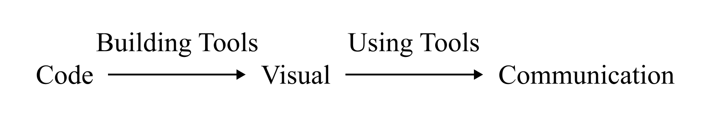
Tool building educator Stig Møller Hansen notes a lack of structured knowledge around why custom design tools should be built in the first place: Applications range “from quickly sketching ideas, conducting experiments to spark ideas, and providing single-purpose tools to be used in-house, to providing refined and complex design systems delivered to a client. A study devoted to developing a deeper understanding of the many ways code can be used is essential to further justify and integrate code as an integral part of graphic design education.” I want to contribute to this understanding by elaborating on the different ways custom tools influence both the process and the outcomes of graphic design.
Benefits for the Process
I identify two main benefits of custom tools for the design process. The first is breaking defaults. This means the possibility of bypassing limitations in ideation by building tools and breaking habits by using them. The second is about how custom tools enable a playful design process. They do this in the sense that building new tools can come with surprises and using them can be playful, rather than streamlined.
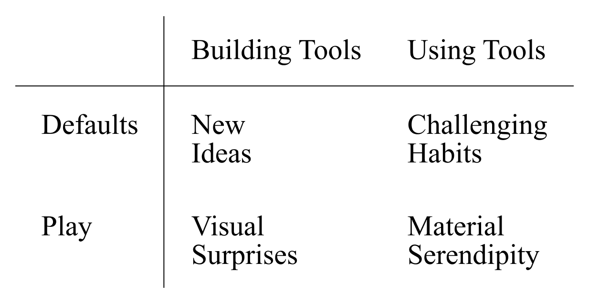
Breaking Defaults
One of the arguments for creating custom tools is that it allows breaking free from the streamlined, efficient confines of corporate controlled products. How do these paradigms manifest in industry standard software? Anthony Dunne reflects on “user-friendliness” in his critical design cornerstone Hertzian Tales. Drawing on Paul Virilio, he recognizes how optimized interfaces dissolve the boundary between person and machine. The systems mask how they shape our behaviour and therefore, we lose our human independence. Virilio refers to this relationship as an “enslavement.”60
Dunne elaborates on this description: “This enslavement is not, strictly speaking, to machines, nor to the people who build and own them, but to the conceptual models, values, and systems of thought the machines embody. User-friendliness helps to naturalise electronic objects and the values they embody. […] We unwittingly adopt roles created by the human factors specialists of large corporations.”61
Admittedly, the argument of escaping big tech can hardly count when relying on large language models to build tools. The most capable models are in the hands of very few, extremely powerful tech companies. Having a model respond in a conversational tone, often agreeable, sometimes sycophantic, creates a loss of critical distance. The humanized chat interface is arguably even more dangerous than the functional user-friendliness of traditional design tools. Especially when used for the thinking process itself, it requires caution.
At the same time, it would be reductive to dismiss this point entirely, because some of the default-breaking benefits of custom tools still apply. Writer and designer Rob Giampietro concluded his conversation about the “Default Systems in Graphic Design” stating: “The problem is not that Default Systems are bad and haven’t been opposed. The problem is that not even designers really understand what they mean. And that problem – along with the irresponsibility that it suggests – is far worse.” Custom graphic design tools still introduce new defaults, even if they are created through chat interfaces with questionable ones. What matters is making these defaults visible by allowing designers to define them themselves.
New Ideas: Breaking Defaults Building Custom Tools
A reliable and familiar tool is essential for producing work efficiently, but it can also become limiting by narrowing the range of design ideas that are considered. As Abraham Maslow puts it, “it is tempting, if the only tool you have is a hammer, to treat everything as if it were a nail.”62
Current industry-standard tools still largely simulate analog design processes, although this is not necessary in the flexible context of digital design. If a tool defaults to placing text on a straight line, this becomes the first approach and is rarely questioned. In the case where a design aims to express craft and human error, it is possible to construct a tool in which letters are arranged by drawing lines. Balancing legibility with expressive typesetting can produce work that makes the intention visible. In this sense, I argue that tools should be chosen according to their communicative potential, much like typefaces or images.
Many existing tools have the capability of scripting and creating extensions. But since they do not make their source code accessible, there are limits to how far they can be modified. Many experienced After Effects users create scripts to automate tedious tasks, but may struggle when it comes to exporting a PDF for print. Similarly, Figma is known for having an active community contributing custom plugins, yet it is not built for exporting animation. Each tool carries assumptions about what it is supposed to do.
Starting a project in these programs makes it tempting to think within their boundaries. In today’s multimedia landscape, it can be valuable for designers to work with an open system like code. Generally speaking, working with code allows a tool to be configured for the needed outputs, such as 3D, vector, animation, or print. In principle a custom tool can be modified at the source level to support any functionality that code can express.
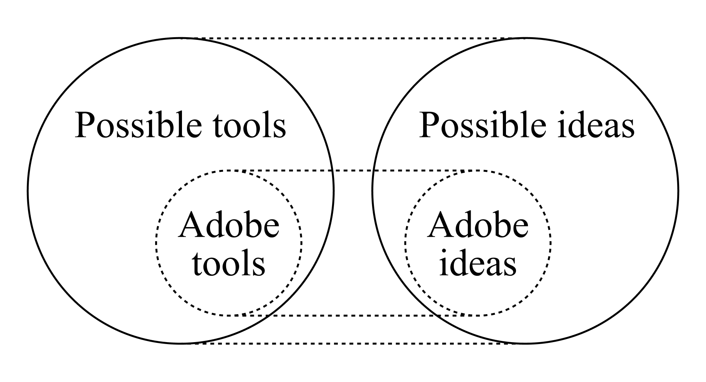
In addition, because of this flexibility, thinking in custom tools can shift where ideas come from. Inspiration can be taken from outside the field, from nature, art or science, and translated into a graphical system. At the same time, it can also come from computation itself. Applying a tool or an algorithm that is not intended for design presents the chance to explore its visual implications.
Challenging Habits: Breaking Defaults Using Custom Tools
Industry standard design software is largely aimed at being functional. It offers the most direct path to producing something commercially viable. It also tends to come with bloated interfaces, with menus one rarely visits and features layered on top of each other. Custom tools, in contrast, tend to be minimal and may be clunky or lacking functionality. Precisely because of that, they break habits. Working with a tool that does not have an undo function already changes the process significantly. It encourages committing to decisions or at least being more accepting of imperfect results. Such defaults make John M. Culkin’s words palpable: "We shape our tools and thereafter they shape us."63
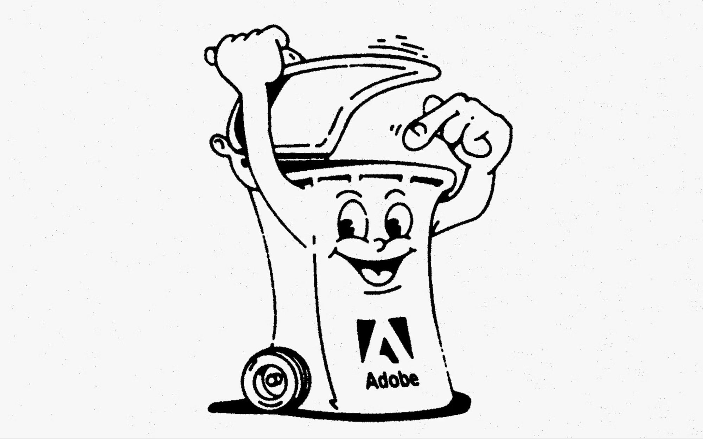
There has been increasing criticism of companies like Adobe that dominate the design tool market. Subscription models, inconsistent user experience across products, and long-standing bugs are only some of the points of frustration. Still, their tools are difficult to avoid in professional contexts and, in most cases, continue to fulfill their role in production workflows.
For that reason, abandoning them entirely is neither realistic nor necessary. It is also important to be cautious about advocating this approach if the alternative involves individually rebuilding the basic functions of existing software. The ease with which large language models can generate features makes it tempting to reinvent the wheel. As such, combining custom tools with standard ones can be a valid approach; extending the toolkit rather than replacing it. Custom tools then function as an intermediate step, generating material or enabling processes that would otherwise be difficult to access.
Playfulness
Analog ways of designing can appear more playful than coding. Collaging, painting, or sketching
allow thinking with the hands. Conversely, coding requires more planning and abstraction. Thoughts need to be structured into language. LLMs loosen this restrictive process by allowing more informal language to guide it.
When a certain familiarity with the way instructions need to be phrased has been established, even tool building can become surprisingly playful. Breaking the streamlined defaults of traditional design software makes room to replace them with more playful ones.
Visual Surprises: Playfulness in Building Custom Tools
One of the most enticing things about custom tools is their ability to realize ideas for complex visuals. Arranging images in the shape of a sphere would be tedious to experiment with manually, but can be sketched with code rather quickly. After defining a system, it plays out near instantly. The outcomes are often hard to anticipate, which can be considered an element of play.
After this initial stage, the tool can be iterated on. Previously, this would require a certain level of technical expertise, such as knowing where in the code modifications need to be made. With LLMs, this barrier is lowered. “What if”-scenarios can be explored without fully understanding the underlying structure. Reflecting on the “WYSIWYG revolution,” Michael Rock highlights the fact that it brought “immediacy back to the process of typography.” Being able to write text while seeing its typeset output instantly, he rejoices “typography is reunited with writing.”64 A similar shift is happening with LLMs, bringing the conception of a tool closer to its outcome.
Material Serendipity: Playfulness in Using Custom Tools
In a similar way, playfulness also appears in the usage of custom tools. Once a system is put into place, it can produce a range of different outcomes immediately. This is due to the procedural nature of code. Whenever the input is changed, or another dial is twisted, the whole chain of commands gets executed again. This type of feedback made coded tools playful before even tool building became gamified through LLMs.
Another way in which custom tools offer room for play is by simulating unpredictable properties of the material world. Chaotic systems based on physics or growth deviate from the otherwise more straightforward process in traditional tools. Making visual material bounce, stretch and break can bring joy, but may also inspire unconventional designs.
Lastly, custom tools make it possible to bring the body back into the digital world. Keyboard and trackpad have proven to be practical interfaces, but their reign can be questioned. When making new tools, there is potential in engaging with a computer through different means than fingertips. Combining the built-in webcam with a pose recognition system, for instance, allows for forms of full-body interaction that contrast with the otherwise seemingly disembodied activity of digital design.
Benefits for Outcomes
Aside from their benefits to the process of designing, custom tools also have a visible impact on finished works of graphic design. In the following I analyze five benefits of coding design tools identified by Talia Cotton. I then relate these benefits to the functional principles of code. To conclude, I want to highlight examples where tools enabled conceptually strong graphic design.
Five Principles
In an interview with TypeOne magazine, Cotton names five principles that informed her work as the lead of a studio that specializes in designing with code.65 In the interview, she specifically advocates for judging work created with coded custom tools in the same way one would a work created by traditional means. To her code is “simply another medium” in the changing digital environment, whereas “the principles of communication design” are a constant. Through this lens, successful communication is valued over novel workflows. I find her list to be quite comprehensive, but will briefly go through each point and reflect on it as a design goal.
1 Coding can make design automated.
Coding can automate design processes, and execute a very large number of tasks almost immediately.
This first statement is important, but needs to be dissected carefully. Designers should not automate themselves. Jonas Deuter gives an adequate critique of design agency Strichpunkts “Layout Creator” for the DPDHL Group:66 Their corporate identity comprises a tool that creates designs autonomously by generating layouts and curating them using artificial intelligence. He calls this an example of “precarious circumstances” in the design industry. Full automation leads to “predetermined” outcomes and “uniformity” on the visual level and implies the “dissipation of design personnel.” Keeping designers involved at every step is precious. Deuter, quoting Karl Gerstner, emphasizes the value of preserving “room for the good idea.”
What Cotton points to in the second part of her explanation is crucial. The repeated execution of tasks via loops is possibly the defining visual characteristic of graphic design work created with code. This means going beyond the pragmatic use of saving time by automating a process that would be tedious, but feasible in existing software. A tool that makes full use of code’s capabilities enables an expressive use of algorithms, shaping a design in form and motion. In most cases, this becomes possible through loops. Loops can execute tasks repeatedly across different dimensions. Looping through space allows the placement or manipulation of many objects within two or three dimensions. Looping through time opens up expressive motion systems that are based on many calculations. Finally, one can also loop through all possible variations of a coded design system. This can create an overview of the system and its possible states in regard to position, movement, and its other parameters.
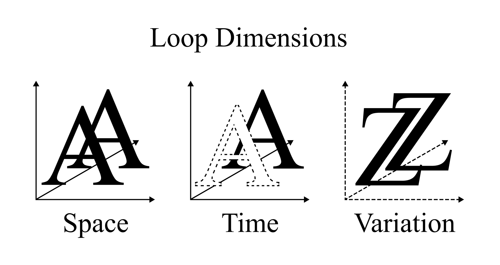
2 Coding can make design interactive.
Design can respond to the input of the user or a group of users.
When looking at graphic design in the form of interactive media such as websites or installations, interaction can enable playful engagement with the work. It can also let users show and hide information, giving them agency in discovering content. This point could also refer to the trend of exposing a design tool to the public, allowing people to explore a design system on their own terms.
3 Coding can make design data-driven.
Design can respond to a live or static dataset.
I take a critical stance toward graphic design that claims to be data-driven. In my experience it tends to result in work that ends up being a data visualization with poor readability. That is because it focuses on communicating a message, not the underlying data. There is little benefit to a design that is based on data if it cannot be read, outside using this as a way to justify design decisions. Unlike flexible identities that adapt to different media, few have managed to make “alive” identities that evolve with processes of transformation seem like more than a gimmick.
An example where data-driven graphic design was executed successfully is Bureau Borsche’s “Book of Birkenstock.” As part of the project, they created an extensive digital archive of historical brand assets. The aim of the publication was to show how the brand evolved throughout the many years of its history. They based the layout on a script, which ordered the archival images chronologically and scaled them based on their DPI to ensure print-ready resolution. In terms of automated design this fits the “pragmatic” category. The spreads could have been made manually in InDesign, but the tool saved time.
4 Coding can make design generative.
Design can use controlled random values to create many variations on a theme within a system.
Generative design needs a basis to generate from. As Cotton states, this can be “random values,” but also data, user input or deterministic rules devised by a designer. Seeing a whole range of outputs shows the implications of a system and makes it easier to tweak it. Random variations can also be interesting because they put the designer into the role of a curator. I built a tool that combines two images at random, which uncovered interactions between the images that were more unexpected and subtle than in manually forced combinations.
Another point where generative systems shine is in their flexibility. Generative designs are inherently procedural, they can adapt to any content. One can change the underlying text and keep all the manipulations that follow after, or extend a static design to produce motion. This way, generative systems can also adapt to different media, which leads to the fifth principle.
5 Coding can make design adaptable.
A design can be changed systematically by its viewer or device.
The way design systems can make design adaptable has been explored in detail by Martin Lorenz in his book Flexible Visual Systems.67 He formulates his ideas with human executed systems and identity design in mind, but they extend seamlessly to coded tools. Building systems on flexible parameters instead of fixed values, they become responsive, adapting to a variety of sizes and aspect ratios. This is a powerful mechanism for a digital media landscape.
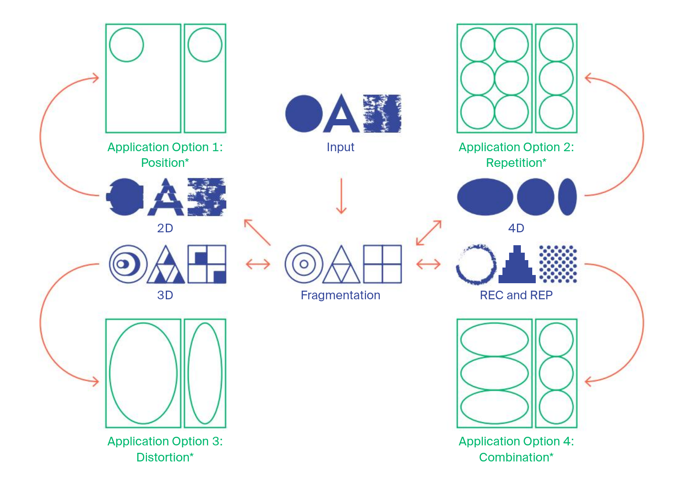
Lorenz identifies two types of flexible visual systems. The first, form-based systems, relies on repetition of shape to create a recognizable identity, which loops in code excel at.68 The second, transformation-based systems, become recognizable by manipulating different inputs in the same way.69 These transformation-based identities are comparatively underexplored and work especially well with code, because code can apply complex transformations in quickly and exactly the same way every time.
In a diagram Lorenz visualizes the different kinds of treatments one can apply to inputs like shapes, type or images. Listing 2D, 3D and 4D transformations as possible paths, one can draw parallels to the dimensions in which one can apply loops, which I outlined in relation to the automation principle. Further, Lorenz lists recording and reproduction techniques, such as printing or scanning, as more complex processes of transformation. There are plentiful digital algorithms that can achieve such a complex effect, “Reaction Diffusion” or “Sobel Edge Filter” being examples.
Lorenz claims the only case where implementing a flexible visual system is not worth it, is for one-offs: Single objects that need to be designed. This is rarely the case in identity design. Nonetheless, such striking visual effects can arguably make it worth it to implement a system in the shape of a tool for a single output. A poster with a visual form that is inaccessible without writing custom code for it, may be eye-catching enough to make developing the tool worth it. The fact that the tool easily adapts to any other media it needs to play on in the future, is a bonus.
In summary, to really understand what code can contribute to a work of design, one has to understand what code is. Code can broadly be described as a sequence of control structures. These include variables, conditionals, and loops. Variables reference the memory of the computer and therefore allow the handling of live or static data, including sensor input from user interaction. Conditionals provide branching logic, which is essential for responsive or adaptable designs. Loops are presumably the most powerful control structure in computing. They enable automation, thus making use of the computer’s tireless will to work. The degree to which a tool generates or automates design can be chosen freely.
Overall, custom tools are fit for the creation of flexible graphic design products and invite experimental approaches that are both suitable for a digital mediatic landscape. It is in the hands of designers to ensure these opportunities are used in a way that enhances communication.
Casting Ideas Into Form
In this chapter, I want to give a brief analysis of some projects that represent an inspiring use of custom tools in my eyes. These unconventional works are the result of highly technical workflows, but don’t rely on that fact to convince. They demonstrate a strong sensibility for visual form and communicative qualities. What particularly fascinates me is the conceptual strength of the custom tool use.
First, I want to mention DIA Studio’s identity for the Chaumont Biennale in 2021. Under the motto viral, the team designed a layered motion system that weaves together images and typography. The work communicates this theme on two levels. Virality in the sense of popular media is expressed through floating memes. The way these images appear and disappear in a bubbling fashion suggests the infectious meaning of virality. They created a base layer of animated typography in After Effects and added the images through an elaborate setup with custom scripts.
Another acclaimed work is Adeline Mollard’s identity for the dance festival “Les Printemps de Sévelin 2021.” Together with media interaction designer Adrien Kaeser, they recorded the performers using a motion tracking system. As the dancer’s limbs move through space, a digital line is left behind. This allowed them to show the intricate and complex motion of dancers in a static poster.
The third piece of graphic design which makes great use of a custom tool is the identity that Bureau Borsche developed for the sound residency program Tune of the Haus der Kunst in Munich. For this project, the studio built a tool which allowed them to embed type within a spectrogram. The spectrogram is a method to visualize the distribution of frequencies within an audio file. Experimental electronic musicians like Aphex Twin are known to have used this technique to hide images within their songs. The resulting imagery is reminiscent of the technoid color schemes of infrared cameras and fits well with dimly-lit sound art performances.
The last project I want to highlight is a wedding invitation designed by Luna Maurer. The entire typographic design is constructed from a single line. Drawn with a modified version of Jonathan Puckey’s Ribbon Tool, it evokes a dress, or a gift. In this case, the limitations of the tool informed the unconventional approach. The work demonstrates how even technologically simple custom tools can shape the design process and, in turn, influence the outcome, which is restrained rather than elaborate, yet still expressive and charming.
What do these projects have in common? All projects use computers to do more than simulate pre-digital tools. The works make use of computation to gain access to novel forms of visual expression. While typography is still the main means of communication, the forms around it are not just added on, but spring from a concept. Tools and ideas are matched in a meaningful way. The works succeed, because they communicate information as text and convey the theme in a more intuitive way through motion and form.
Furthermore, they are the result of collaboration between people with hybrid skills. Knowing the tool, technique, or algorithm made them able to consider it for use in design. More importantly, they had the graphic design skills to shape these technical experiments into coherent visual communication.
Conclusion
Large language models make tool building accessible and bring an immediacy to tool building that is reminiscent of the WYSIWYG revolution. They suit code generation, specifically because of the output’s generic nature and are fit for application in graphic design, since design decisions remain with the human. While this presents a promising opportunity, the unclear long-term effects of the technology call for critical evaluation and deliberate application. As the question mark in the title of this thesis suggests, using large language models is not as straightforward as What You Say Is What You Get.
Sustainability
By substantially lowering the effort required for software creation, LLMs enable building tools at high speed. Rather than using this to increase the scope of their projects, designers should redirect the gained capacity into reconsidering what is worth producing in the first place. Sustainable tool building calls for reflection over acceleration. Such a position can help avoid generic tools and, more broadly, homogenization of graphic design culture.
Designers should be aware of the environmental cost of prompting, but also of the artificial intelligence infrastructure as a whole. The data released by LLM providers is so far insufficient to draw a definite conclusion concerning the impact of building a tool from scratch using agentic models. As artificial intelligence is changing rapidly, it is important to reevaluate the environmental impact of LLMs continuously. As a general direction it is advisable to favor few, intentional prompts over agentic sprawl.
The way LLMs gamify the tool building process also risks hindering learning. Creating tools without gaining an understanding of how code works makes it hard to use them to their full potential. It is valuable to know that, rather than outsourcing thinking to it, AI can also be used to encourage thinking.
To build tools sustainably, designers should further have an awareness for what tools already exist. Custom tools should not replace, but extend a designer’s toolkit where existing software falls short. Shared code in the form of open source software can be adapted and repurposed.
Language
Large Language Models need to be instructed in language. What has changed, in comparison to writing code, is the kind of language that is required. Details like syntax and language-specific idioms become less relevant. Nevertheless, the more clearly defined and detailed instructions are, the closer the output will match the intention. It is therefore helpful to be familiar with the names and visual implications of algorithms, more than how to implement them.
Exploring algorithms gives an overview of tasks computers excel at executing. This is particularly useful when wanting to explore the computer as more than a tool to simulate analog design processes. Even if such algorithms are available in existing software, possible benefits arise from integrating them in an automated system, in terms of influencing the process and possible outcomes.
Aside from acquiring technical language, there is another skill designers need to learn in order to prompt LLMs strategically. Often summarized as computational thinking, it relates to an understanding of what code is and as such can do. Designers don’t necessarily need to be able to write loops and conditionals themselves, but should understand what becomes possible by using them.
Since LLMs currently can’t see the way humans do, the visual analysis must come from the designer. A core skill is to describe visuals with precision, for the initial prompt and later for debugging. The generalized, stepwise functioning of programs must be kept in mind for this.
Benefits
Custom tools can positively impact both the process and the outcomes of graphic design. Designers should keep these potential benefits in mind to steer the development of a tool in a valuable direction.
In terms of the design process, I differentiate between building and using tools. Fusing the two limits compositional capabilities to those of a written system, which can hinder the creation of dynamic layouts. It also poses the risk of focusing on fleshing out a tool rather than using it to communicate.
Another way custom tools are useful for the process is how they expose the defaults of software. They can help bypass limitations when encountering them and even before that, allow conceiving designs beyond the confines of existing tools. They also enable a more playful rather than streamlined digital design experience. Generally, an unconventional way of working will also inform the outcome.
The outcome, which affects the broader audience, also benefits from designing with custom tools. Successful works produced with custom tools often harness the power of automation. This makes a more curatorial design process and exploration of novel aesthetics possible.
Despite this, automation does not have to manifest in avant-garde forms or ones that give the impression of computer science. There are also applications, where a single spread or post could have been made by hand, but the tool systematized the design. Systems in design and computation are highly compatible. Permitting a more encompassing approach, they are especially suitable for identity design, where a wide range of artifacts needs to be presented in a consistent manner. These coded systems should, however, not be a replacement for a designer.
I argue that custom tools are well suited for conceptual applications. Here the tool enables experimenting with forms that are expressive beyond the aesthetic layer. Representing ideas in an abstract way, computational forms and motion can be a communicative element to choose from beyond colors, images and typefaces.
Deliberate Use
Involving designers in tool building and computation at large will hopefully also contribute to an understanding of when a custom tool does not represent a meaningful improvement. According to Aho’s definition,70 computational thinking frames problems to solve them with computation. As such, adopting a computational mindset brings the danger of becoming a self-fulfilling prophecy.
When not to build a tool, and further when not to work with a large language model is a fundamental insight that needs to be gained. AI companies promise complete autonomy, but this does not yet hold up well for people without a technical background.
I claim autonomy should not be the goal. The most successful projects have come and will continue to come from collaboration. Not only because of complementary knowledge, but also because of what is human about working together. Challenging and being challenged, empathy and emotion are not byproducts of the process. In conversation between humans, different worldviews collide and their consequences are negotiated. Abstracting computer code to a level that everyone can talk about should be the true benefit of large language models.
Outlook
There are several ways in which the tool building resource I contribute could be extended. It may be sensible to integrate more code examples to help understand how algorithms look and how they work. Transferring the site’s data to Github would make it possible to create a community around contributing. Thinking bigger than the technical terms on the website, collecting and sharing more complex tools would be beneficial to encourage code use over regeneration. Leandra Tiemann recently started an effort to create a collection of open source design tools at mod-lab.org.
Next to introducing designers to algorithms, the visual side of the tool could be expanded. Analyzing and labelling the communicative potential of the resulting visuals may be helpful to designers. This implies visual associations in relation to social, cultural or natural phenomena. Thinking about Lorenz’s classification of visual transformations,71the taxonomy could also be extended by terms more common in graphic design like quadratic ease out or line halftone screen. These transformations can be explored more freely in custom tools and the words might not be known to designers who use them intuitively.
For designers that want to learn tool building, reading technical terms and seeing code examples is not enough. Considering the Hofmann breakdown, there were many more problems to solve at intermediate stages of the process. Overall designers will need guidance to make use of the resource. I will examine how it is picked up by students in the upcoming Critical Coding seminar at the ZHdK.
It will be interesting to see how new computational thinking and a de-emphasis on syntax will be implemented in graphic design curricula. Møller Hansen investigated graphic design coding curricula in detail,72 although before LLMs turned coding inside out. How can design education focus on visual outcomes, while still providing a thorough understanding of possibilities and thus possible benefits of computation? To what degree is working with the material of code necessary for such an understanding? How can LLM-assisted coding be taught in a way that brings joy without losing critical distance? It would be interesting to see how the Deconstruction/Reconstruction method could be adapted to account for the increased accessibility of more complex code through LLMs.
Where custom tools become beneficial is where existing tools fall short. Since the industry-provided tools keep developing, this will change where custom tools can be deemed useful. Emerging technologies that were once exclusive to custom tools have been implemented in standard software, such as variable fonts in Adobe software or physics simulations in motion tool Cavalry. The future might bring a design tool that is flexible enough to respond to varied demands of the current mediatic landscape. It should combine needs for designing in print, web or animation and make extension via scripting a core feature.
It is hard to estimate how the development of graphic design tools will impact the profession. I personally hope to see more unconventional, default-questioning design over smooth commercial systems and the bloated, overengineered work that often accompanies them. Bloat and play, however, should not get mixed up. Maurer and Wouters envision a future in which designers purposefully reintroduce friction into the digital world, embracing flawed human voices.73
This leads to the bigger discussion around artificial intelligence. Agentic coding is a recent development that makes it harder for humans to stay in the loop and creates a dependency on subscriptions that might become expensive in the future. It is difficult to predict the influence that being able to code without engaging with it will have on the next generation. Besides, there are other concerns about the lifecycle of an LLM that I did not address in this thesis, such as exploitative digital labor practices used for data preparation. The question of authorship over commercial design work based on LLM-generated tools also remains to be discussed. On a more positive note, small, local, energy-efficient and open source LLMs may be developed as more sustainable alternatives to the dominant big-tech models served from the cloud.
To some degree, LLMs democratize the development of software. It is for designers to seize this opportunity and get involved in reshaping the digital tools essential to their craft. Collaborating on open source software will play an important role in escaping the confines of corporate tools. What is more, there’s hope for the flourishing of alternatives to the exploitative platforms used for design marketing that Geert Lovink denounces as “brutal.”74 When employed with the right intentions, large language models have the capacity to bring forth inherently human tools in an increasingly artificial world.
Bibliography
Aho, Alfred V. “What Is Computation? Computation and Computational Thinking.” Ubiquity, January 2011.
Amiri, Faramarz. “Programming as Design: The Role of Programming in Interactive Media Curriculum in Art and Design.” International Journal of Art & Design Education 30 (June 2011): 200–210. https://doi.org/10.1111/j.1476-8070.2011.01680.x.
Bridle, James. Ways of Being: Animals, Plants, Machines: The Search for a Planetary Intelligence. First American edition. Farrar, Straus and Giroux, 2022.
Cooper, Muriel. “Computers and Design.” Design Quarterly, no. 142 (1989). https://doi.org/10.2307/4091189.
Csizmadia, Andrew, Paul Curzon, Mark Dorling, et al. Computational Thinking - a Guide for Teachers. January 2015.
Culkin, John M. “A Schoolman’s Guide to Marshall McLuhan.” Saturday Review, March 18, 1967.
Denning, Peter J. “Remaining Trouble Spots with Computational Thinking.” Communications of the ACM 60, no. 6 (2017): 33–39. https://doi.org/10.1145/2998438.
Deuter, Jonas. Karl Gerstner: Der Traum vom Absoluten: Struktur und Programm im grafischen und künstlerischen Entwurfsprozess. Verlag Kettler, 2025.
Grösser, Stefan, and Luis Felipe Olivares Pfeifer. “Environmental Impact of Large Language Models: Green or Polluting?” SocietyByte, July 15, 2025. https://www.societybyte.swiss/en/2025/07/15/environmental-impact-of-large-language-models-green-or-polluting/.
iA. “Turning the Tables on AI.” June 13, 2024. https://ia.net/topics/turning-the-tables-on-ai.
Lorenz, Martin. Flexible Visual Systems: The Design Manual for Contemporary Visual Identities. Slanted, 2021.
Lovink, Geert. Platform Brutality: Closing down Internet Toxicity. Valiz, 2025.
Maslow, Abraham Harold. The Psychology of Science: A Reconnaissance. Harper & Row, 1966.
Mitchell, Mark C., and Oliver Bown. “Towards a Creativity Support Tool in Processing: Understanding the Needs of Creative Coders.” Proceedings of the 25th Australian Computer-Human Interaction Conference: Augmentation, Application, Innovation, Collaboration, November 25, 2013, 143–46. https://doi.org/10.1145/2541016.2541096.
Stinson, Liz. “How Computer Code Became a Modern Design Medium—an Oral History.” Design History 101. Eye on Design, December 5, 2019. https://eyeondesign.aiga.org/how-an-mit-research-group-turned-computer-code-into-a-modern-design-medium/.
Victionary, ed. CodeCrafted: Generative Design in Branding. Viction:ary, 2025.
Weaver, Amber. “Fusing Design and Technology in Pursuit of Purposeful Work with Talia Cotton.” TypeOne Magazine: The Creative Coding Issue, September 2023.
Declaration of AI Use
Large language models by OpenAI and Anthropic were used to structure, discuss and revise this thesis. I also briefly evaluated Google’s NotebookLM for finding connections between research papers.
1Alice Twemlow, “Graphic Design: Introduction,” in 60 Innovators Shaping Our Creative Future, ed. Lucas Dietrich (Thames & Hudson, 2009), 146.
2“Unstated | Museum für Gestaltung Zürich,” accessed May 7, 2026, https://museum-gestaltung.ch/en/guide-young-graphic-design-switzerland/unstated.
3Studio Koto, “We’re finding ourselves building more and more tools, generators and other coded curiosities [...],” November 4, 2025, https://www.instagram.com/p/DQpCPrfiWMA/.
4“Critical Coding,” Visual Communication ZHdK, accessed May 7, 2026, https://visualcommunication.zhdk.ch/projekte/critical-coding/.
5“INTL on Instagram: ‘Bring Graphic Design to Life through Code. In This Two Day Workshop “SUPERFLUID” with Vera van de Seyp,’” Instagram, September 1, 2024, https://www.instagram.com/intl.international/p/C_X11xuo3u6/.
6Artemisia Astolfi, “TypoMorphosis – An Exploration of Typesetting through InDesign Scripting,” Visual Communication, 2025, https://visualcommunication.zhdk.ch/en/diplom-2025/typomorphosis-an-exploration-of-typesetting-through-indesign-scripting/.
7Pierre Vigier, “Procedural Death Animation With Falling Sand Automata,” Pvigier’s Blog, December 12, 2020, https://pvigier.github.io/2020/12/12/procedural-death-animation-with-falling-sand-automata.html.
8Demian Conrad et al., “Graphic Design in the Post-Digital Age,” March 2022, https://postdigitalgraphicdesign.com/interview/4.
9“Create a Brush Tip from an Image,” Adobe Inc., accessed April 2, 2026, https://helpx.adobe.com/content/help/en/photoshop/desktop/apply-painting-techniques/brushes-presets/create-brush-tip-image.html.
10Golan Levin, “Segmentation and Symptom - Interactive Art by Golan Levin and Collaborators,” accessed April 7, 2026, https://flong.com/archive/projects/zoo/index.html.
11Benedikt Groß, “Generative Gestaltung – the Book,” accessed March 31, 2026, https://benedikt-gross.de/projects/generative-gestaltung-the-book/.
12Stig Møller Hansen, “Public Class Graphic_Design Implements Code { // Yes, but How? }: An Investigation towards Bespoke Creative Coding Programming Courses in Graphic Design Education” (Ph.D, Aarhus University, 2019), 76, https://doi.org/10.7146/aulsps-e.340.
13Luna Maurer et al., “Conditional Design Manifesto,” accessed May 7, 2026, https://conditionaldesign.org/manifesto/.
14Clive Thompson, “Coding After Coders: The End of Computer Programming as We Know It - The New York Times,” accessed April 2, 2026, https://www.nytimes.com/2026/03/12/magazine/ai-coding-programming-jobs-claude-chatgpt.html.
15Merriam-Webster.com Dictionary, s.v. “WYSIWYG,” accessed November 26, 2025, https://www.merriam-webster.com/dictionary/WYSIWYG.
16Michael Rock, “WYSIWYG — 2x4,” 2014, https://web.archive.org/web/20240723061044/https://2x4.org/ideas/2014/wysiwyg/.
17Wikipedia contributors. “Creative coding.” Wikipedia, August 21, 2025. https://en.wikipedia.org/wiki/Creative_coding.
18Tim Rodenbröker, What Is Creative Coding?, December 15, 2022, https://timrodenbroeker.de/faq/what-is-creative-coding/.
19Mark C. Mitchell and Oliver Bown, “Towards a Creativity Support Tool in Processing: Understanding the Needs of Creative Coders,” Proceedings of the 25th Australian Computer-Human Interaction Conference: Augmentation, Application, Innovation, Collaboration, November 25, 2013, 143–46, https://doi.org/10.1145/2541016.2541096.
20Jürg Lehni, “Teaching in the Spaces between Code and Design,” Eye Magazine, accessed April 9, 2026, https://eyemagazine.com/feature/article/teaching-in-the-spaces-between-code-and-design.
21“Type@Cooper on Instagram: ‘NEW WORKSHOP! Developing Graphic Design Browser Tools with Vera van de Seyp @veravandeseyp Will Take Place on Tuesdays, October 7–November 18, 6:30 Pm—9:00 Pm at The Cooper Union! To Register, Go to Workshops Linked in Our Bio!,’” Instagram, accessed April 13, 2026, https://www.instagram.com/coopertype/reel/DO8oE19ET8J/.
22Merriam-Webster.com Dictionary, s.v. “tool,” accessed April 13, 2026, https://www.merriam-webster.com/dictionary/tool.
23Liz Stinson, “How Computer Code Became a Modern Design Medium—an Oral History,” Design History 101, Eye on Design, December 5, 2019, https://eyeondesign.aiga.org/how-an-mit-research-group-turned-computer-code-into-a-modern-design-medium/.
24Muriel Cooper, “Computers and Design,” Design Quarterly, no. 142 (1989): 30, https://doi.org/10.2307/4091189.
25Oliver Reichenstein and Orlando Budelacci, “Design as Thought,” iA, June 8, 2024, https://ia.net/topics/design-as-thought.
26Judy Hanwen Shen and Alex Tamkin, “How AI Impacts Skill Formation,” arXiv:2601.20245, preprint, arXiv, February 1, 2026, https://doi.org/10.48550/arXiv.2601.20245.
27Grace Liu et al., “AI Assistance Reduces Persistence and Hurts Independent Performance,” arXiv:2604.04721, preprint, arXiv, April 7, 2026, https://doi.org/10.48550/arXiv.2604.04721.
28Reichenstein and Budelacci, “Design as Thought.”
29Andrej Karpathy [@karpathy], “There’s a new kind of coding I call ‘vibe coding’, where you fully give in to the vibes, embrace exponentials, and forget that the code even exists. It’s possible because the LLMs (e.g. Cursor Composer w Sonnet) are getting too good. Also I just talk to Composer with SuperWhisper,” Tweet, Twitter, February 2, 2025, https://x.com/karpathy/status/1886192184808149383.
30Andrej Karpathy [@karpathy], “Plan is to throw a party in the Andromeda galaxy 1B years from now. Everyone welcome, except for those who litter,” Tweet, Twitter, December 3, 2022, https://x.com/karpathy/status/1599152286672248832.
31“Turning the Tables on AI,” iA, June 13, 2024, https://ia.net/topics/turning-the-tables-on-ai.
32James O’Donnell and Casey Crownhart, “We Did the Math on AI’s Energy Footprint. Here’s the Story You Haven’t Heard.,” MIT Technology Review, accessed May 3, 2026, https://www.technologyreview.com/2025/05/20/1116327/ai-energy-usage-climate-footprint-big-tech/.
33Sam Altman, “The Gentle Singularity,” Sam Altman, June 10, 2025, https://blog.samaltman.com/the-gentle-singularity.
34Cooper Elsworth et al., “Measuring the Environmental Impact of Delivering AI at Google Scale,” arXiv:2508.15734, preprint, arXiv, August 21, 2025, https://doi.org/10.48550/arXiv.2508.15734.
35O’Donnell and Crownhart, “We Did the Math on AI’s Energy Footprint. Here’s the Story You Haven’t Heard.”
36Romain Robbes et al., “Agentic Much? Adoption of Coding Agents on GitHub,” arXiv:2601.18341, preprint, arXiv, April 8, 2026, https://doi.org/10.48550/arXiv.2601.18341.
37Kevin Roose, “More! More! More! Tech Workers Max Out Their A.I. Use.,” Technology, The New York Times, March 20, 2026, https://www.nytimes.com/2026/03/20/technology/tokenmaxxing-ai-agents.html.
38Simon P. Couch, “Electricity Use of AI Coding Agents,” Simon P. Couch, January 20, 2026, https://simonpcouch.com/blog/2026-01-20-cc-impact/.
39Elsworth et al., “Measuring the Environmental Impact of Delivering AI at Google Scale.”
40Casey Crownhart, “Can Nuclear Power Really Fuel the Rise of AI?,” MIT Technology Review, accessed May 3, 2026, https://www.technologyreview.com/2025/05/20/1116339/ai-nuclear-power-energy-reactors/.
41Jacob Lindgren, “Jacob Lindgren: Graphic Design’s Factory Settings,” accessed April 30, 2026, https://www.walkerart.org/reader/jacob-lindgren-graphic-designs-factory-settings/.
42Stefan Grösser and Luis Felipe Olivares Pfeifer, “Environmental Impact of Large Language Models: Green or Polluting?,” SocietyByte, July 15, 2025, https://www.societybyte.swiss/en/2025/07/15/environmental-impact-of-large-language-models-green-or-polluting/.
43Patrik Hübner, in CodeCrafted: Generative Design in Branding, ed. Victionary (Hong Kong: Viction:ary, 2025), 27.
44Thompson, “Coding After Coders: The End of Computer Programming as We Know It - The New York Times.”
45Thompson, “Coding After Coders: The End of Computer Programming as We Know It - The New York Times.”
46Boris Cherny [@bcherny], “@YashGouravKar1 Correct. In the last thirty days, 100% of my contributions to Claude Code were written by Claude Code,” Tweet, Twitter, December 27, 2025, https://x.com/bcherny/status/2004897269674639461.
47Denis Stetskov, “Claude Code’s Source: 3,167-Line Function, Regex Sentiment,” September 19, 2025, https://techtrenches.dev/p/the-snake-that-ate-itself-what-claude.
48Thompson, “Coding After Coders: The End of Computer Programming as We Know It - The New York Times.”
49Thompson, “Coding After Coders: The End of Computer Programming as We Know It - The New York Times.”
50Reichenstein and Budelacci, “Design as Thought.”
51James Bridle, Ways of Being: Animals, Plants, Machines: The Search for a Planetary Intelligence, First American edition (Farrar, Straus and Giroux, 2022), 152–153.
52solub, “Shape generator help (Armin Hofmann’s ‘rubber band’ shape generator) - Processing / Coding Questions,” Processing Community Forum, August 6, 2024, https://discourse.processing.org/t/shape-generator-help-armin-hofmanns-rubber-band-shape-generator/33190/40.
53Thompson, “Coding After Coders: The End of Computer Programming as We Know It - The New York Times.”
54Alfred V. Aho, “What Is Computation? Computation and Computational Thinking,” Ubiquity, January 2011.
55Andrew Csizmadia et al., Computational Thinking - a Guide for Teachers, January 2015, 6.
56Peter J. Denning, “Remaining Trouble Spots with Computational Thinking,” Communications of the ACM 60, no. 6 (2017): 33–39, https://doi.org/10.1145/2998438.
57Faramarz Amiri, “Programming as Design: The Role of Programming in Interactive Media Curriculum in Art and Design,” International Journal of Art & Design Education 30 (June 2011): 8, https://doi.org/10.1111/j.1476-8070.2011.01680.x.
58Stig Møller Hansen, “Deconstruction/Reconstruction: A Pedagogic Method for Teaching Programming to Graphic Designers,” Proceedings of the 20th Generative Art Conference GA2017, 2017.
59Peter Bilak, “Typeface As Programme: Interview with Peter Biľak Article on Typotheque by Jürg Lehni,” April 14, 2011, https://www.typotheque.com/articles/typeface-as-programmeinterview-with-peter-bilak.
60Paul Virilio, The Art of the Motor, trans. Julie Rose (University of Minnesota Press, 1995), 135.
61Anthony Dunne, Hertzian Tales: Electronic Products, Aesthetic Experience and Critical Design (RCA CRD Research Publications, 1999), 24.
62Abraham Harold Maslow, The Psychology of Science: A Reconnaissance (Harper & Row, 1966), 15–16.
63John M. Culkin, “A Schoolman’s Guide to Marshall McLuhan,” Saturday Review, March 18, 1967, 70.
65Amber Weaver, “Fusing Design and Technology in Pursuit of Purposeful Work with Talia Cotton,” TypeOne Magazine: The Creative Coding Issue, September 2023, 53.
66Jonas Deuter, Karl Gerstner: Der Traum vom Absoluten: Struktur und Programm im grafischen und künstlerischen Entwurfsprozess, my translation. (Verlag Kettler, 2025), 367.
67Martin Lorenz, Flexible Visual Systems: The Design Manual for Contemporary Visual Identities (Slanted, 2021).
68Lorenz, Flexible Visual Systems, 85.
69Lorenz, Flexible Visual Systems, 233.
70Aho, “What Is Computation? Computation and Computational Thinking.”
71Lorenz, Flexible Visual Systems.
72Hansen, “Public Class Graphic_Design Implements Code { // Yes, but How?”
73Luna Maurer and Roel Wouters, “Designing Friction,” accessed May 14, 2026, https://designingfriction.com/.
74Geert Lovink, Platform Brutality: Closing down Internet Toxicity (Valiz, 2025).